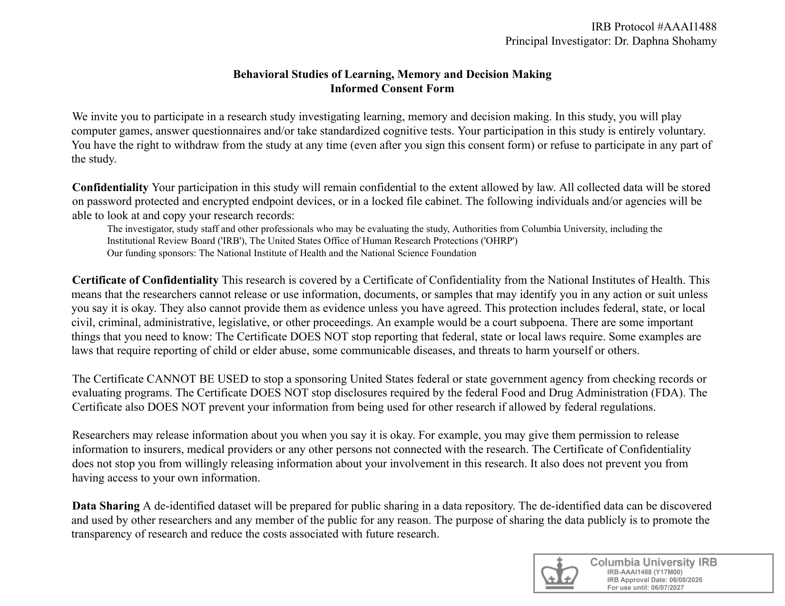
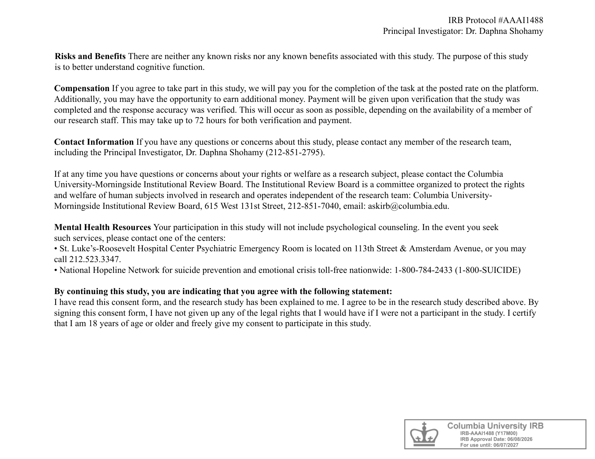

<!DOCTYPE html>
<html>
  <head>
    <meta charset="utf-8">
    <title>Image Value Study</title>
    <style>
      body {
          background-color: #f8f9fa;
          font-family: Arial, sans-serif;
      }

      .stimulus-container {
          width: 800px;
          margin: 0 auto;
          text-align: center;
      }

      .exp-image {
          width: 450px;
          height: 350px;
          object-fit: contain;
          border: 2px solid #ccc;
          background-color: #fff;
          display: block;
          margin: 0 auto;
      }

      .assoc-row {
          display: flex;
          justify-content: center;
          align-items: center;
          gap: 30px;
      }

      .assoc-image {
          width: 340px;
          height: 300px;
          object-fit: contain;
          border: 2px solid #ccc;
          background-color: #fff;
      }

      .small-image {
          width: 260px;
          height: 210px;
          object-fit: contain;
          border: 2px solid #ccc;
          background-color: #fff;
      }

      .fixation {
          font-size: 60px;
          color: #333;
          height: 400px;
          display: flex;
          align-items: center;
          justify-content: center;
      }

      .question-area {
          height: 80px;
          display: flex;
          align-items: center;
          justify-content: center;
      }
    </style>
    <script src="jspsych/plugins/jspsych.js"></script>
    <script src="jspsych/plugins/plugin-instructions.js"></script>
    <script src="jspsych/plugins/plugin-html-button-response.js"></script>
    <script src="jspsych/plugins/plugin-survey-text.js"></script>
    <script src="jspsych/plugins/plugin-html-keyboard-response.js"></script>
    <script src="jspsych/plugins/plugin-fullscreen.js"></script>
    <script src="jspsych/plugins/plugin-preload.js"></script>
    <script src="jspsych/plugins/plugin-call-function.js"></script>
    <link rel="stylesheet" href="jspsych/css/jspsych.css">
  </head>
  <body></body>
  <script>

// ============================================================
// DATA SAVING (same mechanism as base template, with backup)
// ============================================================
var data_folder = 'data/';
var data_already_saved = false;

function saveData(data) {
    if (data_already_saved) {
        console.log("saveData already called once, skipping duplicate call.");
        return;
    }
    data_already_saved = true;

    console.log("Starting saveData...");
    fetch('/write_data.php', {
        method: 'POST',
        headers: { 'Content-Type': 'application/json' },
        body: JSON.stringify({ filedata: data })
    })
    .then(response => {
        if (!response.ok) {
            throw new Error('Network response was not ok: ' + response.status);
        }
        return response.text().then(text => {
            try {
                return JSON.parse(text);
            } catch (e) {
                return { success: true, raw: text };
            }
        });
    })
    .then(result => {
        console.log("Success! Data saved to server.", result);
    })
    .catch(error => {
        console.error("Error saving data to server:", error);
        try {
            var backupKey = 'experiment_backup_' + participant_id + '_' + Date.now();
            localStorage.setItem(backupKey, data);
            console.log("Data saved locally to localStorage with key:", backupKey);
            alert("Data saved locally. Please do not close this window.");
        } catch (storageError) {
            console.error("Error saving to localStorage:", storageError);
            alert("Warning: Could not save data to server or locally. Please do not close this window and contact support.");
        }
    });
}

var jsPsych = initJsPsych({
    on_finish: function() {
        console.log("Experiment timeline finished (on_finish).");
        saveData(jsPsych.data.get().csv());
    }
});

var timeline = [];

var participant_id = jsPsych.data.getURLVariable('participantId') || jsPsych.randomization.randomID(15);
var study_id = jsPsych.data.getURLVariable('assignmentId');
var session_id = jsPsych.data.getURLVariable('projectId');

jsPsych.data.addProperties({
    subject_id: participant_id,
    study_id: study_id,
    session_id: session_id,
    experiment: 'Button_Device_Value_Spreading_Pilot'
});

// ============================================================
// STIMULUS FOLDER & FILE NAMING
// Each pair ("series") lives in its own folder inside images_buttons/:
//
//   images_buttons/series_N/button_N.png                    (button, before pressing)
//   images_buttons/series_N/click_N.png                     (button, being pressed)
//   images_buttons/series_N/<device>_before_pressing_N.png  (device, before)
//   images_buttons/series_N/<device>_after_pressing_N.png   (device, after)
//
// <device> is the device's name in the file names (in series_1 it is "light").
// If other series use other device names (e.g. "fan", "lamp"), fill them in
// DEVICE_NAMES below. Any series not listed defaults to "light".
//
// Series 1-8  = CAUSAL     (pressing the button activates the device)
// Series 9-16 = NON-CAUSAL (pressing the button does nothing)
// ============================================================
var NUM_PAIRS = 16;
var NUM_CAUSAL = 8; // series 1..8 are causal, 9..16 are non-causal
var STIM_FOLDER = 'images_buttons/';

var DEVICE_NAMES = {
    1: 'light', 2: 'light', 3: 'light', 4: 'light',
    5: 'light', 6: 'light', 7: 'light', 8: 'light',
    9: 'light', 10: 'light', 11: 'light', 12: 'light',
    13: 'light', 14: 'light', 15: 'light', 16: 'light'
};

// Which device image represents the device in Phase 2 (exposure), Phase 3
// (decision) and the memory test: 'before' or 'after'. 'before' is used so
// that causal and non-causal devices look equally "neutral" (in causal
// series the "after" image is lit up, which could confound the results).
var DEVICE_TEST_STATE = 'before';

// Colors used in the short question shown after every image in the
// association phase ("Is there <color> in this image?"). A random color
// from this list is chosen for each image.
var COLOR_OPTIONS = ['blue', 'red', 'green', 'purple', 'yellow', 'orange'];

// How long (ms) each image is shown before the color question appears.
var IMAGE_DISPLAY_MS = 2500;

// TEST MODE: add ?test=1 to the URL to run a quick test version. In test
// mode everything that is shown for a fixed time (association images,
// fixation crosses, blank screens, reward screens, the decision preview,
// the memory cue) lasts only TEST_IMAGE_MS (half a second), the
// association images move on automatically with no color question, and
// the instruction screens unlock after half a second. Screens that wait
// for an answer (judgment, decision choice, memory choice, math,
// SPACEBAR) still wait for the participant. Without ?test=1 the
// experiment runs normally.
var TEST_MODE = jsPsych.data.getURLVariable('test') === '1';
var TEST_IMAGE_MS = 500;

// Returns the given duration normally, or TEST_IMAGE_MS in test mode.
function dur(normalMs) {
    return TEST_MODE ? TEST_IMAGE_MS : normalMs;
}

function getDeviceName(n) {
    return DEVICE_NAMES[n] || 'light';
}

// Folder name of each series, e.g. "series_" -> images_buttons/series_1/
// NOTE: on the server the folders are named WITH A LEADING SPACE
// (" series_1", " series_2", ...), so the prefix starts with a space.
// If the folders are renamed to "series_1" etc., change this to 'series_'.
var SERIES_FOLDER_PREFIX = ' series_';

function seriesFolder(n) {
    return STIM_FOLDER + SERIES_FOLDER_PREFIX + n + '/';
}

// ============================================================
// BUILD THE 16 PAIRS
// ============================================================
var all_pairs = [];
for (var i = 1; i <= NUM_PAIRS; i++) {
    var dev = getDeviceName(i);
    var folder = seriesFolder(i);
    var pair = {
        pair_id: i,
        device_name: dev,
        causality: (i <= NUM_CAUSAL) ? 'causal' : 'non_causal',
        button_path: folder + 'button_' + i + '.png',
        click_path: folder + 'click_' + i + '.png',
        device_before_path: folder + dev + '_before_pressing_' + i + '.png',
        device_after_path: folder + dev + '_after_pressing_' + i + '.png'
    };
    // The CAUSE image of the pair = the (unpressed) button
    pair.cause_path = pair.button_path;
    // The EFFECT image of the pair = the device (state set by DEVICE_TEST_STATE)
    pair.effect_path = (DEVICE_TEST_STATE === 'after') ? pair.device_after_path : pair.device_before_path;
    all_pairs.push(pair);
}

// ------------------------------------------------------------
// Reward is ALWAYS on the EFFECT (the device). Within EACH causality
// group (8 causal, 8 non-causal) exactly 4 pairs are REWARDED ($1) and
// 4 are NEUTRAL ($0). That gives 4 cells with 4 pairs each:
//   causal_reward | causal_neutral | non_causal_reward | non_causal_neutral
// In Phase 2 only the DEVICE of each pair is shown with its value. The
// BUTTON is never shown in Phase 2 - it is the critical (indirect) test
// item in Phase 3.
// ------------------------------------------------------------
function assignRewardWithinGroup(groupPairs) {
    var shuffled = jsPsych.randomization.shuffle(groupPairs.slice());
    var half = shuffled.length / 2;
    shuffled.forEach(function(pair, idx) {
        pair.reward_condition = (idx < half) ? 'reward' : 'neutral';
        pair.cell = pair.causality + '_' + pair.reward_condition;
        pair.exposed_role = 'effect';
        pair.exposed_path = pair.effect_path;
        pair.critical_role = 'cause';
        pair.critical_path = pair.cause_path;
    });
}

assignRewardWithinGroup(all_pairs.filter(function(p) { return p.causality === 'causal'; }));
assignRewardWithinGroup(all_pairs.filter(function(p) { return p.causality === 'non_causal'; }));

// ------------------------------------------------------------
// PRACTICE SERIES: two of the existing series, picked at random for each
// participant - ONE CAUSAL example (from series 1-8) and ONE NON-CAUSAL
// example (from series 9-16). Each is run through the full association
// procedure in the practice round, and after the causal judgment the
// participant gets feedback with the correct answer. The ids are saved on
// every data row (practice_causal_pair_id / practice_noncausal_pair_id)
// so they can be controlled for in the analysis, since these series are
// also shown again in the main experiment.
// ------------------------------------------------------------
var practice_causal_pair = jsPsych.randomization.sampleWithoutReplacement(
    all_pairs.filter(function(p) { return p.causality === 'causal'; }), 1
)[0];
var practice_noncausal_pair = jsPsych.randomization.sampleWithoutReplacement(
    all_pairs.filter(function(p) { return p.causality === 'non_causal'; }), 1
)[0];
jsPsych.data.addProperties({
    practice_causal_pair_id: practice_causal_pair.pair_id,
    practice_noncausal_pair_id: practice_noncausal_pair.pair_id
});

// ============================================================
// PRELOAD
// ============================================================
var imagesToPreload = [
    'images/consent_form_2026_page1.png',
    'images/consent_form_2026_page2.png',
    'images/gray.png',
    'images/dollar.png'
];

all_pairs.forEach(function(p) {
    imagesToPreload.push(p.button_path);
    imagesToPreload.push(p.click_path);
    imagesToPreload.push(p.device_before_path);
    imagesToPreload.push(p.device_after_path);
});

timeline.push({
    type: jsPsychPreload,
    images: imagesToPreload,
    message: 'Loading task assets...',
    // Shows the FULL path of every file that failed to load (useful for
    // debugging 404 errors). Can be removed once all images load correctly.
    show_detailed_errors: true
});

// ============================================================
// SHARED HELPERS
// ============================================================

// Simple 3-option math question, shown a handful of times through the
// experiment (not framed as an "attention check" to the participant).
function mathQuestionTrial() {
    var a = Math.floor(Math.random() * 8) + 1;
    var b = Math.floor(Math.random() * 8) + 1;
    var correct = a + b;
    var distractor1 = correct + 1;
    var distractor2 = (correct - 1 <= 0) ? correct + 2 : correct - 1;
    var options = jsPsych.randomization.shuffle([correct, distractor1, distractor2]);
    var correct_option_index = options.indexOf(correct);

    return {
        type: jsPsychHtmlButtonResponse,
        stimulus: '<div style="font-size:24px;">What is ' + a + ' + ' + b + ' ?</div>',
        choices: options.map(String),
        data: { task: 'math_question', correct_answer: correct },
        on_finish: function(data) {
            data.correct = (data.response === correct_option_index) ? 1 : 0;
        }
    };
}

var whiteScreenTrial = {
    type: jsPsychHtmlKeyboardResponse,
    stimulus: '<div style="background-color: white; width: 100vw; height: 100vh;"></div>',
    choices: "NO_KEYS",
    trial_duration: dur(1000)
};

var fixationTrial = {
    type: jsPsychHtmlKeyboardResponse,
    stimulus: '<div class="fixation">+</div>',
    choices: "NO_KEYS",
    trial_duration: dur(1000)
};

// Wraps a jsPsychInstructions trial so its navigation buttons stay
// disabled for `minMs` (default 10000ms), forcing a minimum reading
// time before the participant can click through to the next stage.
// A small countdown notice is shown while buttons are disabled.
function withMinReadTime(instructionsTrial, minMs) {
    minMs = (typeof minMs === 'number') ? minMs : 10000;
    if (TEST_MODE) { minMs = TEST_IMAGE_MS; }   // test mode: unlock after half a second
    var trial = Object.assign({}, instructionsTrial);
    var original_on_load = trial.on_load;

    trial.on_load = function() {
        if (original_on_load) { original_on_load(); }

        function getNavButtons() {
            return document.querySelectorAll(
                '#jspsych-instructions-back, #jspsych-instructions-next, #jspsych-instructions-nav button, .jspsych-btn'
            );
        }

        var buttons = getNavButtons();
        buttons.forEach(function(btn) {
            btn.disabled = true;
            btn.style.opacity = '0.4';
            btn.style.cursor = 'not-allowed';
        });

        var contentEl = document.querySelector('.jspsych-content') || document.body;
        var notice = document.createElement('div');
        notice.id = 'min-read-notice';
        notice.style.cssText = 'text-align:center; color:#888; font-size:14px; margin-top:15px;';
        var remaining = Math.ceil(minMs / 1000);
        notice.innerText = 'Please take a moment to read (you can continue in ' + remaining + 's)...';
        contentEl.appendChild(notice);

        var countdownInterval = setInterval(function() {
            remaining -= 1;
            if (notice) {
                notice.innerText = remaining > 0
                    ? 'Please take a moment to read (you can continue in ' + remaining + 's)...'
                    : '';
            }
            if (remaining <= 0) { clearInterval(countdownInterval); }
        }, 1000);

        setTimeout(function() {
            getNavButtons().forEach(function(btn) {
                btn.disabled = false;
                btn.style.opacity = '1';
                btn.style.cursor = 'pointer';
            });
            if (notice && notice.parentNode) { notice.parentNode.removeChild(notice); }
        }, minMs);
    };

    return trial;
}

// Short instruction screens (little text): the navigation buttons unlock
// after SHORT_READ_MS (5 seconds) instead of the default 10 seconds.
// The welcome/consent screens and the Phase 2 instructions keep 10 seconds.
var SHORT_READ_MS = 5000;
function withShortReadTime(instructionsTrial) {
    return withMinReadTime(instructionsTrial, SHORT_READ_MS);
}

// Runs all trials for a phase, inserting exactly ONE math question after
// the item at `checkAfterPosition` (1-based), if provided. Used to keep
// the total math-question count at exactly 4 across the whole experiment.
function pushPhase(sourceArray, trialBuilderFn, checkAfterPosition) {
    sourceArray.forEach(function(item, idx) {
        timeline = timeline.concat(trialBuilderFn(item));
        if (checkAfterPosition && (idx + 1) === checkAfterPosition) {
            timeline.push(mathQuestionTrial());
        }
    });
}

function randomColor() {
    return COLOR_OPTIONS[Math.floor(Math.random() * COLOR_OPTIONS.length)];
}

// Shows ONE image alone; after `delayMs` (default IMAGE_DISPLAY_MS) a short
// Yes/No question about a randomly chosen color fades in BELOW the same
// image ("Is there <color> in this image?"), and only then can the
// participant respond and continue. The color that was asked about is
// saved in the data (color_asked), together with answered_yes (1/0).
function buildImageWithColorQuestionTrial(imagePath, dataObj, delayMs) {
    delayMs = (typeof delayMs === 'number') ? delayMs : IMAGE_DISPLAY_MS;
    var color = randomColor();
    var trialData = Object.assign({}, dataObj, { image_path: imagePath, color_asked: color });

    if (TEST_MODE) {
        // Test version: show the image briefly and move on, no question.
        return {
            type: jsPsychHtmlKeyboardResponse,
            stimulus: '<div class="stimulus-container"></div>',
            choices: "NO_KEYS",
            trial_duration: TEST_IMAGE_MS,
            data: Object.assign({}, trialData, { test_mode: 1 })
        };
    }

    return {
        type: jsPsychHtmlButtonResponse,
        stimulus: '<div class="stimulus-container">' +
                   '' +
                   '<div class="question-area" id="delayed-question" style="visibility:hidden; margin-top:15px;">' +
                   '<p style="font-size:20px; font-weight:bold;">Is there <b>' + color + '</b> in this image?</p>' +
                   '</div></div>',
        choices: ['Yes', 'No'],
        data: trialData,
        on_load: function() {
            var btnGroup = document.querySelector('#jspsych-html-button-response-btngroup');
            if (btnGroup) { btnGroup.style.visibility = 'hidden'; }
            setTimeout(function() {
                var q = document.querySelector('#delayed-question');
                if (q) { q.style.visibility = 'visible'; }
                var bg = document.querySelector('#jspsych-html-button-response-btngroup');
                if (bg) { bg.style.visibility = 'visible'; }
            }, delayMs);
        },
        on_finish: function(data) {
            data.answered_yes = (data.response === 0) ? 1 : 0;
        }
    };
}

// ------------------------------------------------------------
// Causal judgment shown after the association sequence of each pair.
// Image A = the button being pressed (click_N), Image B = the device after
// pressing. The participant sees the outcome (device activated or not)
// and decides: A caused B / B caused A / unrelated.
// Coding: 'A_to_B' (correct for causal series), 'B_to_A', 'unrelated'
// (correct for non-causal series).
// ------------------------------------------------------------
// Time limit (ms) for the causal judgment. If the participant does not
// answer within this time, the experiment moves on automatically
// (response = null, timed_out = 1 in the data).
var JUDGMENT_TIME_MS = 3000;

var JUDGMENT_CHOICES = ['A caused B', 'B caused A', 'They are unrelated'];
var JUDGMENT_CODES = ['A_to_B', 'B_to_A', 'unrelated'];

function buildCausalJudgmentTrial(pair, taskPrefix) {
    return {
        type: jsPsychHtmlButtonResponse,
        stimulus: '<div class="stimulus-container">' +
                   '<div class="assoc-row">' +
                   '<div>' +
                   '<p style="font-size:24px; font-weight:bold; margin-top:10px;">A</p></div>' +
                   '<div>' +
                   '<p style="font-size:24px; font-weight:bold; margin-top:10px;">B</p></div>' +
                   '</div>' +
                   '<p style="font-size:20px; font-weight:bold; margin-top:15px;">What is the relationship between image A and image B?</p>' +
                   '</div>',
        choices: JUDGMENT_CHOICES,
        trial_duration: JUDGMENT_TIME_MS,
        data: {
            task: taskPrefix + 'causal_judgment',
            pair_id: pair.pair_id,
            causality: pair.causality,
            device_name: pair.device_name
        },
        on_finish: function(data) {
            data.timed_out = (data.response === null) ? 1 : 0;
            data.judgment = (data.response !== null) ? JUDGMENT_CODES[data.response] : null;
            data.judged_causal = (data.response === null) ? null : ((data.response === 0 || data.response === 1) ? 1 : 0);
            var correct_code = (pair.causality === 'causal') ? 'A_to_B' : 'unrelated';
            data.judgment_correct = (data.judgment === null) ? null : ((data.judgment === correct_code) ? 1 : 0);
        }
    };
}

// ------------------------------------------------------------
// Feedback shown right after the causal judgment in the PRACTICE round.
// Tells the participant whether the answer was right and what the correct
// answer is: "A caused B" for the causal example, "They are unrelated"
// for the non-causal example. Must directly follow the judgment trial
// (it reads the judgment's data).
// ------------------------------------------------------------
function buildPracticeFeedbackTrial(pair) {
    var is_causal = (pair.causality === 'causal');
    var correct_label = is_causal ? 'A caused B' : 'They are unrelated';
    var explanation = is_causal
        ? 'Pressing the button (A) made the device (B) react.'
        : 'Pressing the button (A) did not make the device (B) do anything.';

    return {
        type: jsPsychHtmlButtonResponse,
        stimulus: function() {
            var last = jsPsych.data.get().last(1).values()[0];
            var verdict, color;
            if (last.response === null) {
                verdict = 'Time ran out.'; color = '#888';
            } else if (last.judgment_correct === 1) {
                verdict = 'Correct!'; color = 'green';
            } else {
                verdict = 'Incorrect.'; color = '#c0392b';
            }
            return '<div class="stimulus-container">' +
                   '<h2 style="color:' + color + ';">' + verdict + '</h2>' +
                   '<div class="assoc-row">' +
                   '<div>' +
                   '<p style="font-size:20px; font-weight:bold; margin-top:8px;">A</p></div>' +
                   '<div>' +
                   '<p style="font-size:20px; font-weight:bold; margin-top:8px;">B</p></div>' +
                   '</div>' +
                   '<p style="font-size:20px; margin-top:15px;">The correct answer is: <b>' + correct_label + '</b></p>' +
                   '<p style="font-size:18px;">' + explanation + '</p>' +
                   '</div>';
        },
        choices: ['Continue'],
        data: { task: 'practice_feedback', pair_id: pair.pair_id, causality: pair.causality }
    };
}

// ------------------------------------------------------------
// Full association sequence for ONE pair (used for the practice series
// with taskPrefix 'practice_' and for the main phase with 'encoding_').
// All images are shown ONE AT A TIME, each followed by a color question:
//   BEFORE pressing: 1) button alone   2) device alone (before)
//   AFTER  pressing: 3) button pressed (click) alone   4) device alone (after)
// then the causal judgment (A = pressed button, B = device after).
// ------------------------------------------------------------
// If withFeedback is true (practice only), a feedback screen with the
// correct answer is added right after the causal judgment.
function buildAssociationTrials(pair, taskPrefix, withFeedback) {
    var base = {
        pair_id: pair.pair_id,
        causality: pair.causality,
        device_name: pair.device_name
    };
    function imageTrial(path, stage, role) {
        return buildImageWithColorQuestionTrial(
            path,
            Object.assign({ task: taskPrefix + 'image', stage: stage, image_role: role }, base)
        );
    }
    return [
        imageTrial(pair.button_path, 'before', 'button'),
        imageTrial(pair.device_before_path, 'before', 'device'),
        fixationTrial,
        imageTrial(pair.click_path, 'after', 'button'),
        imageTrial(pair.device_after_path, 'after', 'device'),
        fixationTrial,
        buildCausalJudgmentTrial(pair, taskPrefix)
    ].concat(withFeedback ? [buildPracticeFeedbackTrial(pair)] : [], [whiteScreenTrial]);
}

// ============================================================
// INSTRUCTIONS & CONSENT
// ============================================================
timeline.push(withMinReadTime({
    type: jsPsychInstructions,
    pages: [
        '<div style="text-align: left; padding: 40px; font-family: Arial;">' +
        '<h2>Welcome to the Experiment</h2>' +
        '<p>In this study you will look at devices that are produced in a factory. Each device comes with a button, and you will be asked to judge things related to them.</p>' +
        '<p>The experiment has several short parts, beginning with a brief practice round.</p>' +
        '<p>Click "Next" to read the consent form.</p>' +
        '</div>',
        '<div style="text-align: center; padding: 20px;">' +
        '</img>' +
        '</div>',
        '<div style="text-align: center; padding: 20px;">' +
        '</img>' +
        '</div>'
    ],
    show_clickable_nav: true
}));

timeline.push({
    type: jsPsychFullscreen,
    fullscreen_mode: true
});

// ============================================================
// PRACTICE PHASE
// Two randomly chosen series from the experiment (one causal, one
// non-causal), each run through the full association procedure, with
// feedback on the correct answer in the causal judgment.
// ============================================================
timeline.push(withShortReadTime({
    type: jsPsychInstructions,
    pages: [
        '<div style="text-align: left; padding: 40px; font-family: Arial;">' +
        '<h2>Practice Round</h2>' +
        '<p>We will now go through a short practice round so you can get familiar with the task.</p>' +
        '<p>You will see buttons and devices. After each one, you will be asked a short question about it. In this round, you will also see the correct answer to the last question.</p>' +
        '</div>'
    ],
    show_clickable_nav: true
}));

// Two examples in a FIXED order: first the causal one, then the non-causal
// one. Each one ends with feedback on the causal judgment.
[practice_causal_pair, practice_noncausal_pair].forEach(function(p) {
    timeline = timeline.concat(buildAssociationTrials(p, 'practice_', true));
});

timeline.push(withShortReadTime({
    type: jsPsychInstructions,
    pages: [
        '<div style="text-align: left; padding: 40px; font-family: Arial;">' +
        '<h2>Practice Completed</h2>' +
        '<p>Great! The main experiment is about to begin. Please stay focused on the screen throughout.</p>' +
        '</div>'
    ],
    show_clickable_nav: true
}));

// ============================================================
// PHASE 1: ASSOCIATION (ENCODING)
// Each of the 16 pairs (button + device) goes through the full sequence
// (see buildAssociationTrials): button, device, button pressed, device
// after pressing - one image at a time, each followed by a color
// question - and then a causal judgment (A caused B / B caused A /
// unrelated).
// Series 1-8 are tagged "causal" (pressing activates the device), series
// 9-16 are tagged "non_causal" (pressing does nothing). Order of pairs is
// randomized per participant.
// ============================================================
timeline.push(withShortReadTime({
    type: jsPsychInstructions,
    pages: [
        '<div style="text-align: left; padding: 40px; font-family: Arial;">' +
        '<h2>Phase 1: Buttons and Devices</h2>' +
        '<p>You will see buttons and devices. After each one, you will be asked a short question about it.</p>' +
        '</div>'
    ],
    show_clickable_nav: true
}));

var encoding_order = jsPsych.randomization.shuffle(all_pairs.slice());

pushPhase(encoding_order, function(pair) {
    return buildAssociationTrials(pair, 'encoding_');
}, 8);

// ============================================================
// PHASE 2: CONTROLLED EXPOSURE
// Only the DEVICE of each pair is shown, followed by a reward ($1) or
// neutral ($0) outcome. Within each causality group (causal / non-causal),
// 4 devices are rewarded and 4 are neutral (8 + 8 overall).
// EACH DEVICE IS SHOWN TWICE (with the same value both times): the phase
// has two rounds, each containing all 16 devices in a new random order
// (32 exposure trials in total). Order is independent of the encoding order.
// ============================================================
timeline.push(withMinReadTime({
    type: jsPsychInstructions,
    pages: [
        '<div style="text-align: left; padding: 40px; font-family: Arial;">' +
        '<h2>Phase 2</h2>' +
        '<p>You will now see some of the devices again, one at a time.</p>' +
        '<p><b>Press the SPACEBAR</b> to reveal what that device is worth.</p>' +
        '<p><span style="color:green; font-weight:bold;">$</span> = This device is worth $1</p>' +
        '<p><span style="color:gray; font-weight:bold;">&#9670;</span> = This device is worth $0</p>' +
        '</div>'
    ],
    show_clickable_nav: true
}));

// Two rounds; in each round all 16 devices appear once, in a fresh random
// order, so the two showings of a device are never back-to-back. Copies of
// the pair objects carry the round number (exposure_round) into the data.
var exposure_order = [];
[1, 2].forEach(function(round) {
    jsPsych.randomization.shuffle(all_pairs.slice()).forEach(function(p) {
        exposure_order.push(Object.assign({}, p, { exposure_round: round }));
    });
});

function buildExposureTrials(pair) {
    var is_rewarded = pair.reward_condition === 'reward';
    var reward_img = is_rewarded ? 'images/dollar.png' : 'images/gray.png';
    var reward_txt = is_rewarded ? 'This device is worth $1' : 'This device is worth $0';
    var reward_clr = is_rewarded ? 'green' : 'gray';

    var common_data = {
        pair_id: pair.pair_id,
        causality: pair.causality,
        exposed_role: pair.exposed_role,
        reward_condition: pair.reward_condition,
        cell: pair.cell,
        exposure_round: pair.exposure_round
    };

    return [
        {
            type: jsPsychHtmlKeyboardResponse,
            stimulus: '<div class="stimulus-container">' +
                       '<p style="font-size: 22px; margin-top: 20px; font-weight: bold;">Press SPACEBAR to reveal this device\'s value</p></div>',
            choices: [' '],
            data: Object.assign({ task: 'exposure_wait' }, common_data)
        },
        {
            type: jsPsychHtmlKeyboardResponse,
            stimulus: '<div class="stimulus-container" style="display:flex; align-items:center; justify-content:center; gap:30px;">' +
                       '' +
                       '<div>' +
                       '<p style="color:' + reward_clr + '; font-weight:bold; font-size:22px;">' + reward_txt + '</p></div></div>',
            choices: "NO_KEYS",
            trial_duration: dur(3000),
            data: Object.assign({ task: 'exposure_feedback' }, common_data)
        },
        whiteScreenTrial
    ];
}

// The single math question of this phase goes after the 16th of 32 trials.
pushPhase(exposure_order, buildExposureTrials, 16);

// ============================================================
// PHASE 3: DECISION (forced choice)
// Both test types from Wimmer & Shohamy (2012), always as a direct
// reward-vs-neutral comparison WITHIN the same causality group:
//
//   INDIRECT test (the never-directly-shown BUTTON of each pair):
//     - causal:     4 trials, button whose device was REWARDED vs
//                   button whose device was NEUTRAL
//     - non-causal: 4 trials, same comparison
//
//   DIRECT test (the DEVICE that WAS shown with its $1/$0 in Phase 2 -
//   a manipulation check that basic reward learning worked):
//     - causal:     4 trials, rewarded device vs neutral device
//     - non-causal: 4 trials, same comparison
//
// 16 choices total (8 indirect + 8 direct).
// ============================================================
timeline.push(withShortReadTime({
    type: jsPsychInstructions,
    pages: [
        '<div style="text-align: left; padding: 40px; font-family: Arial;">' +
        '<h2>Phase 3: Decision</h2>' +
        '<p>You will now see pairs of images side by side.</p>' +
        '<p>Choose the image that has the <b>higher monetary value</b>.</p>' +
        '<p>Each screen takes a few seconds to move on to the next one, whether or not you answer right away, so take your time to choose correctly.</p>' +
        '</div>'
    ],
    show_clickable_nav: true
}));

// Reward is always on the effect (device), so the critical (unseen) item is
// always the cause (button) and the exposed item is always the device.
var causal_pairs = all_pairs.filter(function(p) { return p.causality === 'causal'; });
var noncausal_pairs = all_pairs.filter(function(p) { return p.causality === 'non_causal'; });

// Builds reward-vs-neutral trials for one causality group (8 pairs ->
// 4 reward, 4 neutral -> 4 trials). `pathField` selects which image to
// use per pair: 'critical_path' (button) for the indirect test,
// 'exposed_path' (device) for the direct test.
function buildComparisonSet(group, comparisonRole, testType, pathField, causality) {
    var reward_items = jsPsych.randomization.shuffle(
        group.filter(function(p) { return p.reward_condition === 'reward'; })
    );
    var neutral_items = jsPsych.randomization.shuffle(
        group.filter(function(p) { return p.reward_condition === 'neutral'; })
    );
    // reward_items.length === neutral_items.length === 4 by design
    return reward_items.map(function(rewardPair, idx) {
        var neutralPair = neutral_items[idx];
        return {
            test_type: testType, // 'direct' or 'indirect'
            comparison_role: comparisonRole, // 'cause' (button) or 'effect' (device)
            causality: causality, // 'causal' or 'non_causal'
            reward_pair_id: rewardPair.pair_id,
            reward_path: rewardPair[pathField],
            neutral_pair_id: neutralPair.pair_id,
            neutral_path: neutralPair[pathField]
        };
    });
}

// Combine all 4 sets, then shuffle overall order so everything is
// interleaved unpredictably for the participant.
var decision_trials = jsPsych.randomization.shuffle(
    buildComparisonSet(causal_pairs, 'cause', 'indirect', 'critical_path', 'causal').concat(
        buildComparisonSet(noncausal_pairs, 'cause', 'indirect', 'critical_path', 'non_causal'),
        buildComparisonSet(causal_pairs, 'effect', 'direct', 'exposed_path', 'causal'),
        buildComparisonSet(noncausal_pairs, 'effect', 'direct', 'exposed_path', 'non_causal')
    )
);

// Total duration (ms) of each forced-choice screen. The participant can
// answer at any moment, but the screen always lasts the full time before
// moving on. If no answer is given, the data has response = null,
// timed_out = 1 and chose_reward = null.
var DECISION_TIME_MS = 6000;

function buildDecisionTrials(dt) {
    return [
        {
            type: jsPsychHtmlButtonResponse,
            stimulus: function() {
                // random left/right position of the rewarded item
                var reward_left = Math.random() < 0.5;
                window.current_decision = {
                    reward_left: reward_left,
                    test_type: dt.test_type,
                    comparison_role: dt.comparison_role,
                    causality: dt.causality,
                    reward_pair_id: dt.reward_pair_id,
                    neutral_pair_id: dt.neutral_pair_id
                };
                var left_img = reward_left ? dt.reward_path : dt.neutral_path;
                var right_img = reward_left ? dt.neutral_path : dt.reward_path;
                return '<div style="font-family: Arial; margin-bottom: 20px;"><h3>Which image has the <b>higher monetary value</b>?</h3></div>' +
                       '<div class="stimulus-container" style="display: flex; justify-content: center; gap: 30px;">' +
                       '</div>';
            },
            choices: ['Left', 'Right'],
            // The screen lasts DECISION_TIME_MS in total. The participant can
            // answer immediately, but the screen always stays for the full
            // time (answering fast does not speed things up). In test mode
            // (?test=1) an answer ends the screen right away.
            trial_duration: DECISION_TIME_MS,
            response_ends_trial: TEST_MODE,
            data: { task: 'decision_choice' },
            on_load: function() {
                // after a click the buttons are disabled; mark the chosen one
                document.querySelectorAll('#jspsych-html-button-response-btngroup button').forEach(function(b) {
                    b.addEventListener('click', function() {
                        b.style.outline = '4px solid #2e7d32';
                        b.style.outlineOffset = '2px';
                    });
                });
            },
            on_finish: function(data) {
                var c = window.current_decision;
                data.test_type = c.test_type;
                data.comparison_role = c.comparison_role;
                data.causality = c.causality;
                data.reward_pair_id = c.reward_pair_id;
                data.neutral_pair_id = c.neutral_pair_id;
                data.reward_left = c.reward_left ? 1 : 0;
                data.timed_out = (data.response === null) ? 1 : 0;
                data.chose_reward = (data.response === null) ? null :
                                    (((data.response === 0 && c.reward_left) ||
                                      (data.response === 1 && !c.reward_left)) ? 1 : 0);
            }
        },
        {
            type: jsPsychHtmlKeyboardResponse,
            stimulus: '<div style="background-color: white; width: 100vw; height: 100vh;"></div>',
            choices: "NO_KEYS",
            trial_duration: dur(800)
        }
    ];
}

pushPhase(decision_trials, buildDecisionTrials, 8);

// ============================================================
// PHASE 4: CONTROL (memory test)
// ============================================================
timeline.push(withShortReadTime({
    type: jsPsychInstructions,
    pages: [
        '<div style="text-align: left; padding: 40px; font-family: Arial;">' +
        '<h2>Phase 4: Final Questions</h2>' +
        '<p>For each button you will pick the matching device from a few options.</p>' +
        '</div>'
    ],
    show_clickable_nav: true
}));

// ---- 4a: Memory test (all 16 pairs) ----
// Time limit (ms) for choosing the matching device. If the participant
// does not answer within this time, the experiment moves on automatically
// (response = null, timed_out = 1, correct = null in the data).
var MEMORY_TIME_MS = 6000;
var memory_order = jsPsych.randomization.shuffle(all_pairs.slice());

function buildMemoryTrial(pair) {
    var foil_pool = all_pairs.filter(function(p) { return p.pair_id !== pair.pair_id; });
    var foil_sample = jsPsych.randomization.sampleWithoutReplacement(foil_pool, 3);
    var option_paths = jsPsych.randomization.shuffle(
        [pair.effect_path].concat(foil_sample.map(function(p) { return p.effect_path; }))
    );
    var correct_index = option_paths.indexOf(pair.effect_path);
    var option_labels = option_paths.map(function(p, i) { return 'Option ' + (i + 1); });

    var options_html = option_paths.map(function(p, i) {
        return '<div style="text-align:center;"><br>' +
               '<span style="font-weight:bold;">Option ' + (i + 1) + '</span></div>';
    }).join('');

    return [
        {
            type: jsPsychHtmlKeyboardResponse,
            stimulus: '<div class="stimulus-container">' +
                       '<p style="font-size: 18px; margin-top: 15px;">Remember this button. Its matching device is one of the options on the next screen.</p></div>',
            choices: "NO_KEYS",
            trial_duration: dur(2000)
        },
        {
            type: jsPsychHtmlButtonResponse,
            stimulus: '<div class="stimulus-container">' +
                       '<p style="font-size: 18px; margin-top: 15px; font-weight:bold;">Which device matches this button?</p></div>' +
                       '<div style="display:flex; justify-content:center; gap:15px; flex-wrap:wrap; margin-top:10px;">' + options_html + '</div>',
            choices: option_labels,
            trial_duration: MEMORY_TIME_MS,
            data: { task: 'memory_test', pair_id: pair.pair_id, causality: pair.causality, correct_index: correct_index },
            on_finish: function(data) {
                data.timed_out = (data.response === null) ? 1 : 0;
                data.correct = (data.response === null) ? null : ((data.response === correct_index) ? 1 : 0);
            }
        },
        whiteScreenTrial
    ];
}

// The single math question of this phase goes after the 8th of 16 trials.
pushPhase(memory_order, buildMemoryTrial, 8);

// ============================================================
// DEMOGRAPHICS
// ============================================================
timeline.push({
    type: jsPsychSurveyText,
    questions: [
        { prompt: 'Gender (MALE / FEMALE / OTHER):', name: 'gender', rows: 1, columns: 20 },
        { prompt: 'Age:', name: 'age', rows: 1, columns: 5 },
        { prompt: 'Did you notice any pattern in how the values were assigned to devices? If so, describe it.', name: 'reward_strategy', rows: 2, columns: 50 },
        { prompt: 'How did you choose between images in the "higher monetary value" part?', name: 'strategy', rows: 2, columns: 50 }
    ],
    data: { task: 'demographics' }
});

// ============================================================
// SAVE DATA (before the final screen, as a safety net)
// ============================================================
timeline.push({
    type: jsPsychCallFunction,
    func: function() {
        console.log("Reached end of real trials, saving data now (before final screen)...");
        saveData(jsPsych.data.get().csv());
    }
});

// ============================================================
// END OF EXPERIMENT
// ============================================================
timeline.push({
    type: jsPsychInstructions,
    pages: [
        '<div style="text-align: center; padding: 60px; font-family: Arial;">' +
        '<h2>Experiment Completed</h2>' +
        '<p style="font-size: 20px; margin-top: 20px;">You have successfully finished the study.</p>' +
        '<p style="font-size: 22px; color: #28a745; font-weight: bold; margin-top: 30px;">Thank you very much for your participation!</p>' +
        '<p style="font-size: 16px; color: #666; margin-top: 40px;">Your data has already been saved. You may now safely close this window or return to the platform.</p>' +
        '</div>'
    ],
    show_clickable_nav: true
});

jsPsych.run(timeline);

  </script>
</html>
